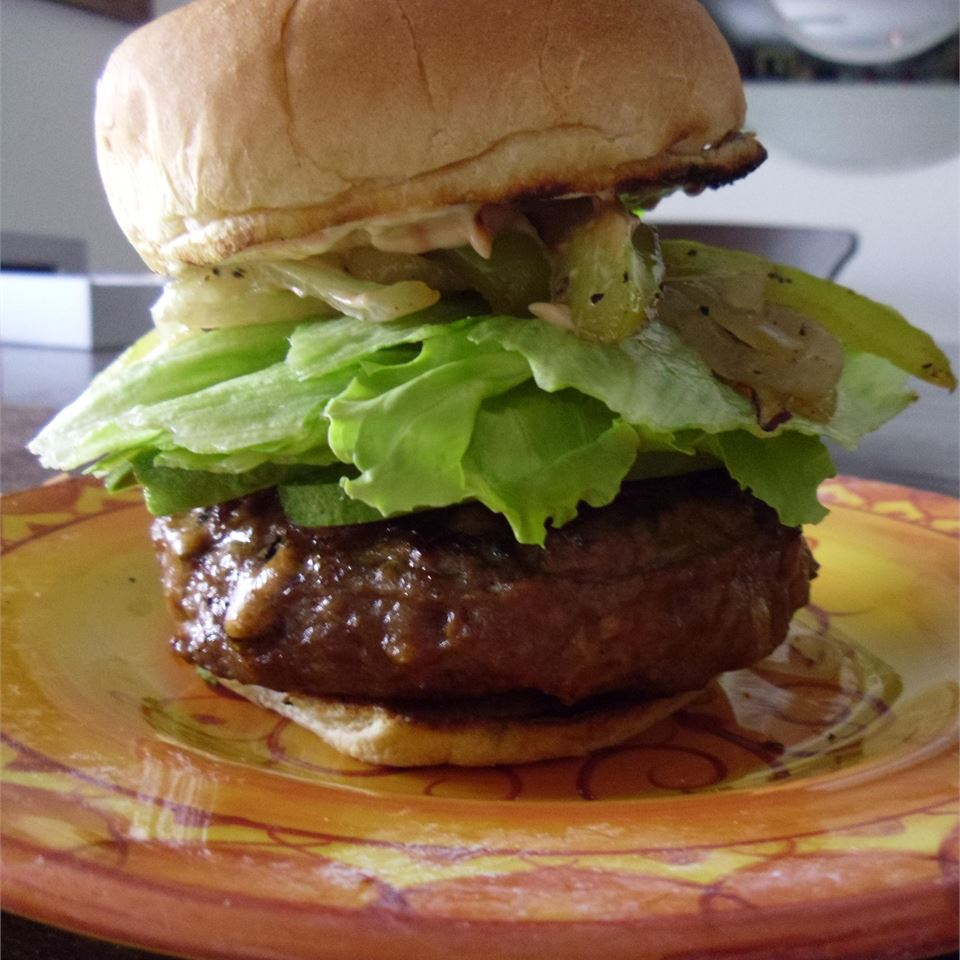

Texas Stuffed Grilled Burgers

Description
FA great change to the usual grilled burgers. These burgers are stuffed with ham, cheese, mushrooms, and onions then slow grilled. Grill over hickory or mesquite wood if possible for better flavor! A sure family pleaser!
Ingredients
- 5 pounds lean ground beef
- 6 tablespoons Worcestershire sauce
- 2 teaspoons hickory seasoning (Optional)
- salt and pepper to taste
- 2 cups chopped onion
- 2 cups chopped fresh mushrooms
- 2 cups chopped cooked ham
- 3 cups shredded Cheddar cheese
Steps
- Preheat a grill for high heat. When the grill is hot, lightly oil the grate.
- In a large bowl, mix together the ground beef, Worcestershire sauce, hickory seasoning, salt and pepper until well blended. Make 20 balls, and flatten into patties. On one half of the patties, distribute the onions, mushrooms, ham and cheese. Carefully cover the piles with the remaining patties, making sure to seal all of the edges of the patties together tightly and enclose the filling.
- Grill the patties for 8 to 10 minutes per side, or until meat is well done, and cheese in the center is melted.
There you have a good ol Texas American Burger add some kechup and mustard to really get the american!